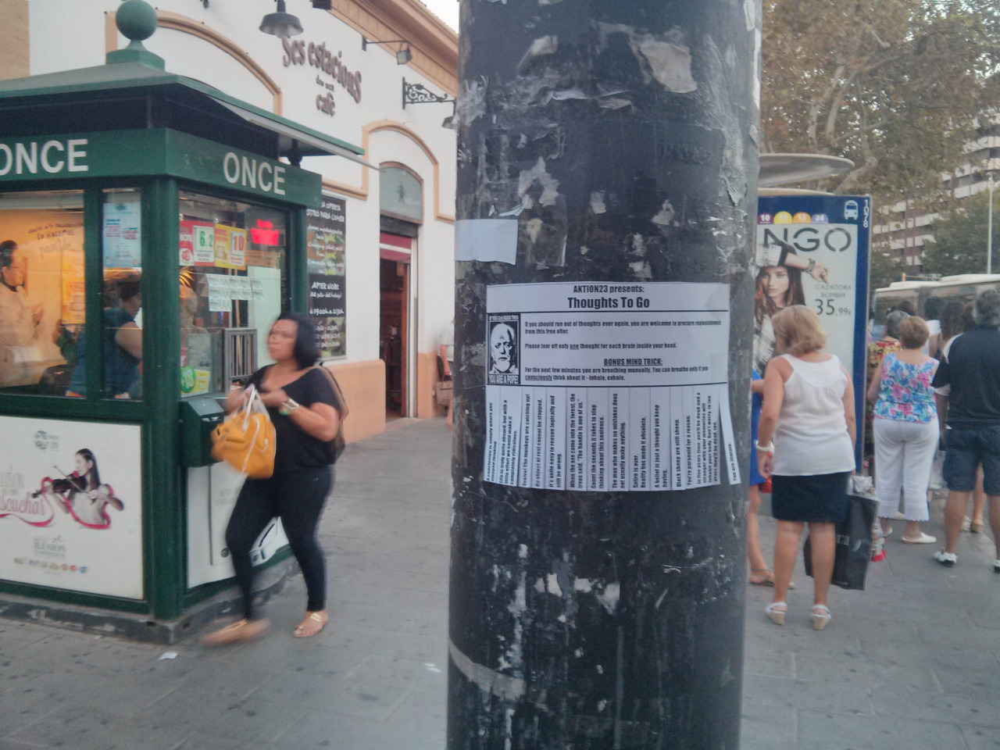
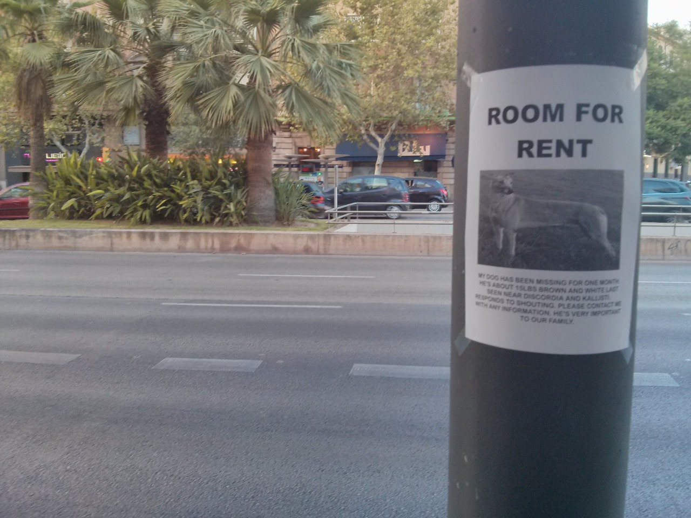
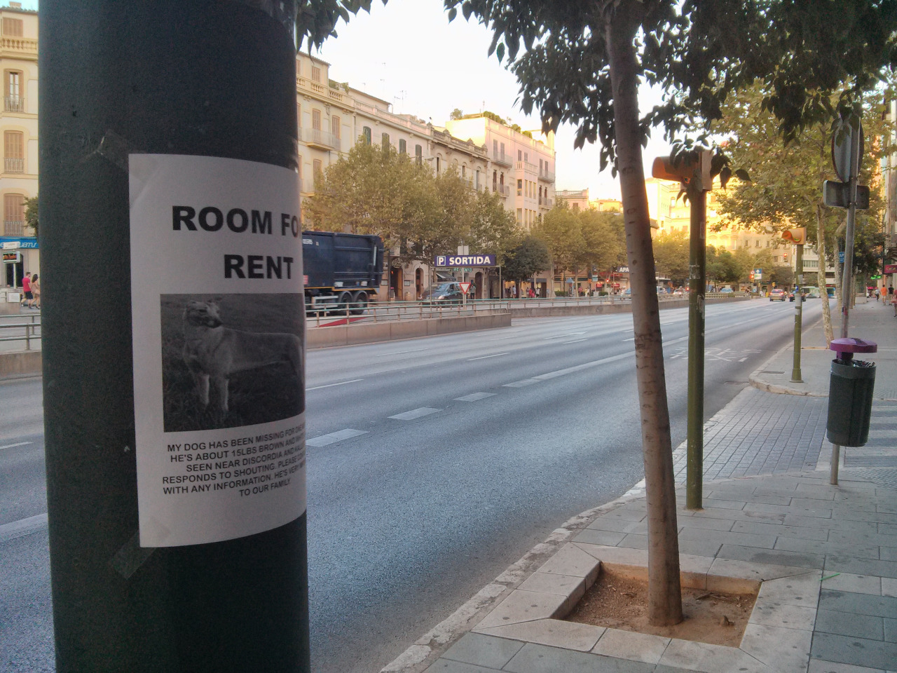
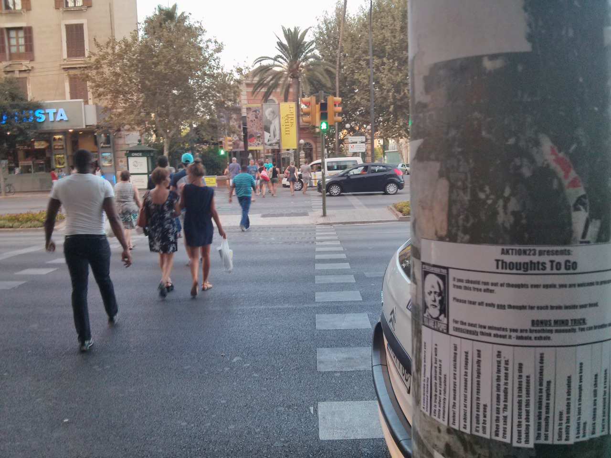
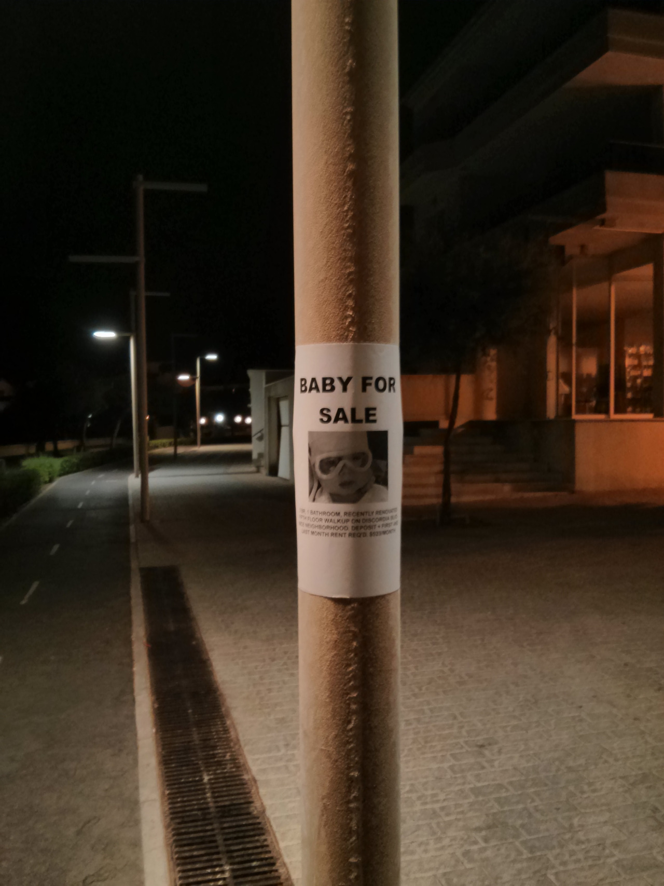
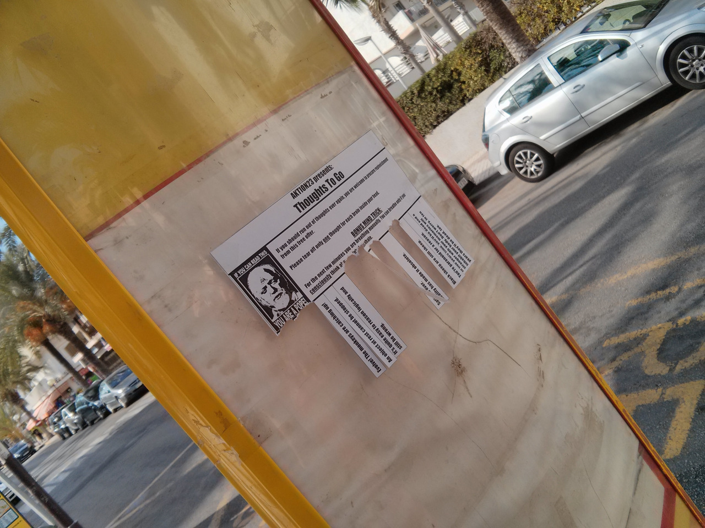
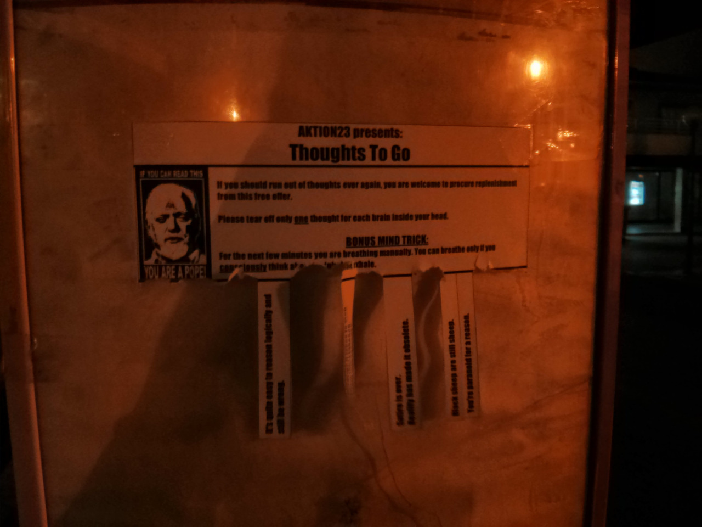
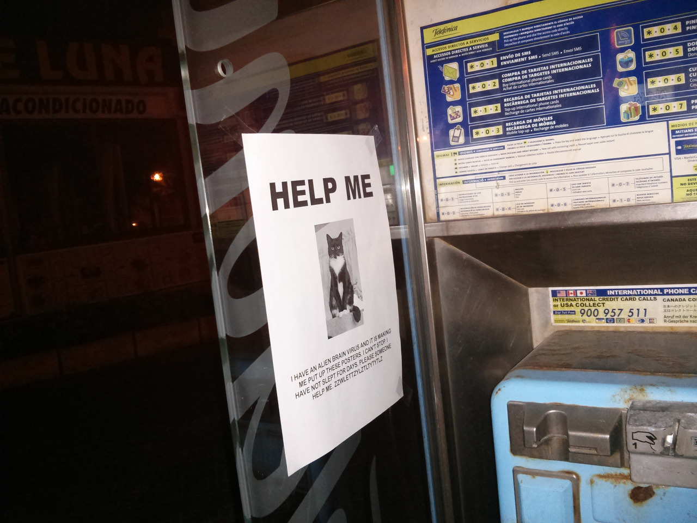
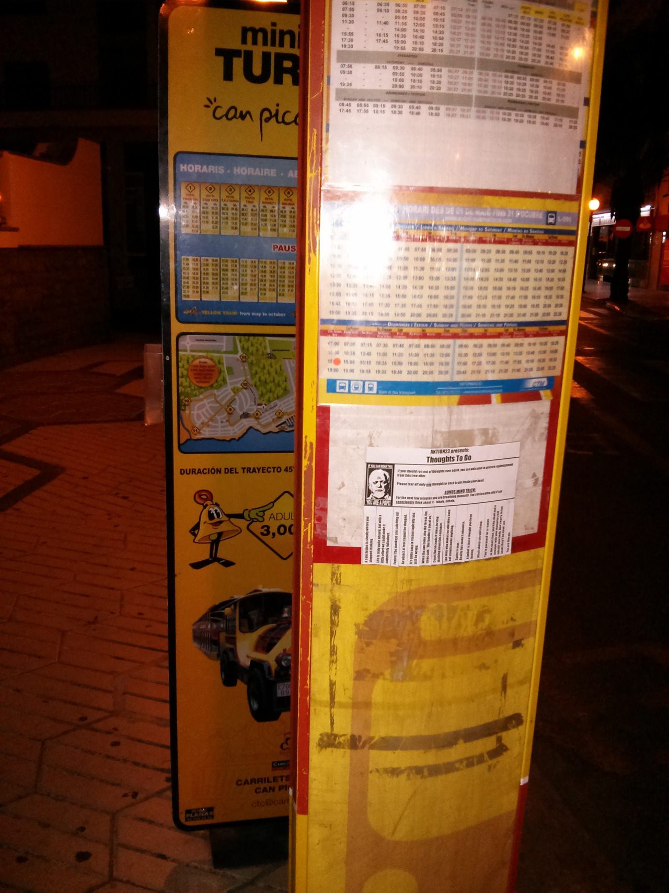
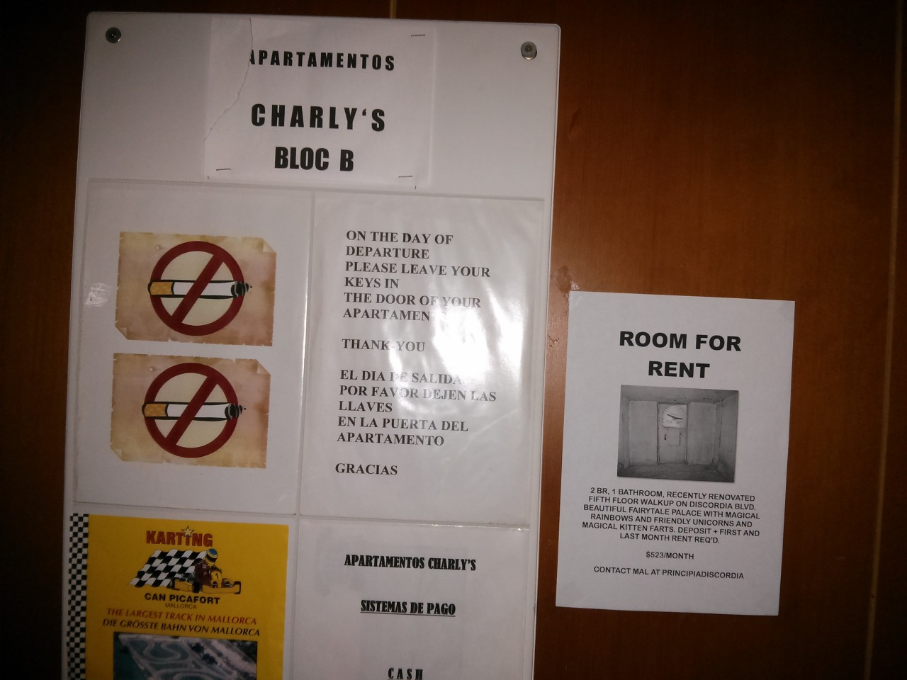

~ Discordian Times ~
It has come to our attention that times of day are defined in a very bigoted way, prioritizing people who have regular sleeping schedules. In addition - the internet also makes times of day confusing. Thus we present: the Erisian Time Scheme:
* Moaning * the time after you wake up and before you stop complaining
* Afnordoon * The time after Lunch and before you stop slacking off
* Brillig * The time in the afnordoon you start broiling things for dinner (and smoking other things)
* The Eviling * The time after dinner when you plot to take over the worlds while sipping espresso on the couch
* The Naught * the time when heathens sleep and the Chao covers the earth…. Discordia breaks loose and boogies.
Lets hear more of this!
Entertaining Boredom
I have been wondering about boredom lately - how it seems so widespread these days. Perhaps our fast-food consumer culture is so used to being entertained by media they expect their environment to entertain them, while they never entertain their environment.
I have begun attending meditation class, and one of the things I learned from the last class was the following:
I have been aware for a few years now that desires can be frustrating when we can’t sate them, and that we need to be able to let go of them when they are interfering with our lives (cf. Buddha). But what I was not aware of, is how often I do something because I subconsciously am trying to satisfy a desire, which I might be aware of in one context, but not in another (framing bias!). The problem here is you might be trying to achieve your goal in a wholly retarded way, but are simply not aware of it.
Hence my new mantra: WHY ARE YOU DOING THIS?
cramulus:
Discordia: treat not taking religion seriously like a religion and go completely psycho
as a warning to others
cramulus:
The government protects my right to practice insane and wrong beliefs and I just want to get my tax moneys worth

Thoughts To Go near the central bus station in Palma de Mallorca

Postergasm: Room For Rent on a post next to one of the main streets in Palma

Can you see?

Seriously!

On some traffic lights.
bwansen:
Postergasm & Thoughts To Go in Palma de Mallorca (Mallorca (Baleares (Spain)))

This was on of the first posted Flyers.

The next day, it was gone. Somebody seems to have misunderstood it. I wouldn't know why. Probably didn't read the details.
Actually there was a beautiful beach in the background which you can't see. Thank you, camera!

These Thoughts To Go on a bus stop have proven to be rather popular. After only one day, more than half of the meme bombs were torn off already...

... and one day later, around midnight, even more were gone.

One of my favourite posters. It was still there after a few days.

Another bus stop.

Theit best apartment!
bwansen:
Postergasm & Thoughts To Go in C’an Picafort (Mallorca (Baleares (Spain))).
Deconstructing your assumptions is important, yeah, but build something new when you’re done. I mean, what do you have if you don’t?
A god damned mess, that’s what. And I’m not cleaning up for you.
Speaking as a Discordian priest, you do NOT want to get Eris overcaffeinated. It gives her Billy & Mandy flashbacks.